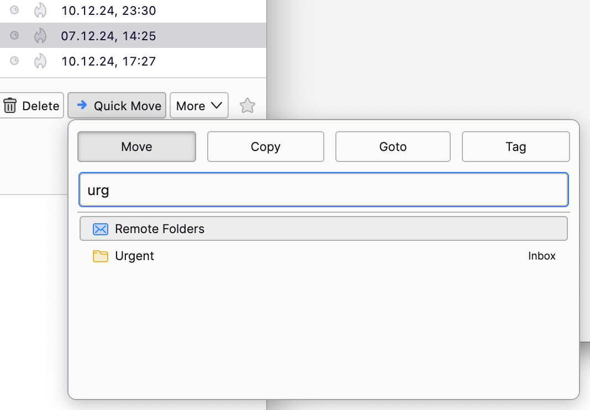
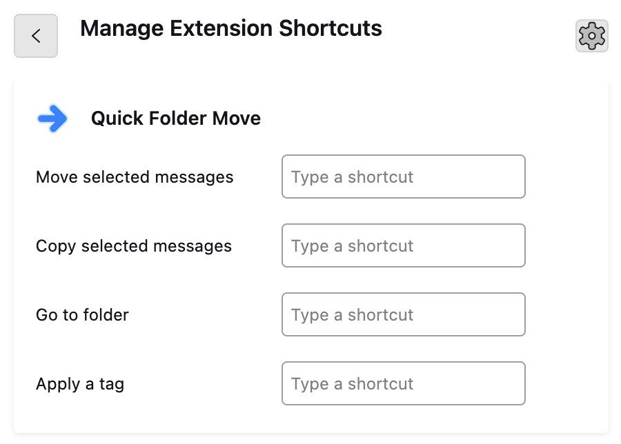

Quick Folder Move
Welcome to your updated version of Quick Folder Move. With this update comes a few adjustments that might reshape your workflow. To keep you in the loop, let's delve into these changes and keep any surprises at bay.
This version adopts a newer extensions technology (MailExtensions), which promises greater stability. The flip side, though, is that this technology doesn't support every customization that you're used to. But don't worry, the following sections will guide you on adapting your workflow to this new version.
This update contains some breaking changes. Please read through this page to the end to avoid the impression the add-on no longer works.
All in one place

In the previous version, you had a variety of ways to launch the Quick Folder Move popup—from the message context menu to keyboard shortcuts. The location of the popup would vary, depending on what elements of the UI were active at the time.
Now, your workflow is more streamlined. Use the button in the main toolbar no matter if you want to move, copy or go to a folder. This change makes your navigation more straightforward and less cluttered.
Moving in context
In addition to the main toolbar button, you also have the option to move messages directly from the message header. This way you'll be able to take action right in context, and you'll be ready to tackle the next message without delay.
Changing Muscle Memory
The new technology restricts available keyboard shortcuts to prevent unexpected command changes. This means we'll bid farewell to Shift+M, welcoming Control+Shift+M Ctrl+Shift+N for 'move' instead (N, not M).
Other actions such as 'copy' and 'goto' no longer have keyboard shortcuts defined by default. You can use the above mentioned keyboard shortcut and then use the left and right arrow keys to select a different action, or, assign your own.
To assign or adjust keyboard shortcuts, use the shortcut manager in Thunderbird. This version also still allows forcing legacy shortcuts in this add-on's preferences.
A future version of the add-on will remove the ability to use legacy shortcuts, so you may as well get used to the new ones now.
There are a number of other new features in this version, thanks to suggestions from users like you.
- A compact layout, for those who prefer the style of the old version.
- A new action to tag message with the labels in Thunderbird.
- The current account is being shown first within search results.
- Pick a set of default folders to show instead of the recent foldera.s
- Search for multiple words/substrings to narrow down the search.